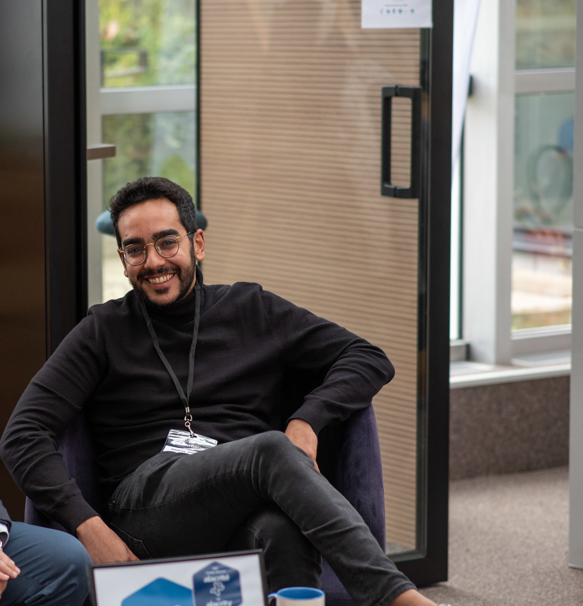

AI & GenAI
LLMs, RAG, Agentic AI, evaluation frameworks, AI governance
AI Strategy · Product Leadership · Venture Building
I turn complex AI and data challenges into products, platforms and teams that deliver.

I operate at the intersection of AI, product and business, from executive vision to production delivery.
Senior AI & Product Consultant with 7+ years across tier-1 financial institutions including BNP Paribas, BPCE and Bouygues Telecom, as well as experience as startup founder of Diskyver. Deep expertise in GenAI production systems, including evaluation frameworks, RAG pipelines and agentic architectures, combined with strong enterprise product delivery across event-driven architectures, IAM and SAFe.
Currently managing a team of approximately 40 across two data transformation programs at BNP Paribas AI Factory. Active builder shipping AI products end-to-end using GitHub Copilot, Codex and Claude Code.
LLMs, RAG, Agentic AI, evaluation frameworks, AI governance
Discovery, roadmap, backlog, KPIs, SAFe/Agile, Jira
GCP, Pub/Sub, BigQuery, GKE, AlloyDB, event-driven systems, Python
GitHub Copilot, Codex, Claude Code, React, Node.js, WebSocket
Keycloak, least privilege, secret management, compliance
~40 contributors managed, mentoring, enterprise pre-sales
Power BI, NLP pipelines, verbatim classification, data migration
Pricing, monetization, retention loops, growth design, PMM
Leading approximately 40 contributors across two critical data transformation workstreams at BNP Paribas AI Factory.
Product Owner on a regulated crypto-asset trading platform built from scratch in a multi-team SAFe environment.
Led PIM solution selection from business discovery through full RFP management.
Founded and led a B2B SaaS startup for near real-time anomaly and cyberattack detection on enterprise VoIP/SIP infrastructure.
Pre-sales and RFP responses for fixed-network solutions serving enterprise and public-sector clients.
Large-scale PLM data migration in a safety-critical industrial environment.
Built AI recommendation algorithms for a healthcare SaaS platform.
Products and public GitHub projects that demonstrate my builder profile: product thinking, AI-assisted delivery, backend/frontend execution, and pragmatic MVP shipping.
Bureau IA pour indépendants, artisans et TPE de service : agents spécialisés, demandes clients, devis, factures, relances, paiements, CRM, prospection et mémoire opérationnelle dans un même espace.
AI-native collaboration centered on real-time conversations and slash commands. Built six specialized AI personas, multi-agent orchestration, Slack and Notion integrations, and a real-time WebSocket architecture.
Competitive skill-gaming mobile platform with 1v1 challenges, tournaments, matchmaking, player wallets and an esports-inspired Ban/Pick system. Defined gameplay loops, monetization and retention systems.
Autonomous customer-support agent with intent recognition, contextual decision-making, action execution and intelligent escalation. Evaluated AHT reduction, automation rate and SLA gains.
Realistic product PoC for personalized betting recommendations: live match simulation, user profile switching, contextual scoring logic, transparent explanations, and sportsbook-inspired UI.
FDJ Loto gain calculator with a FastAPI backend, vanilla frontend, normalized draw data, date filtering, weekday filtering, second-draw support, and player split calculations.
Specialization in Telecom & Software Engineering.
Strategy, innovation and digital transformation.